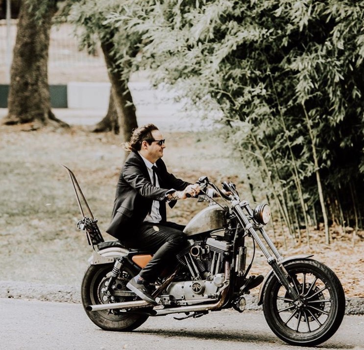

About Me

Hello! I'm Matt and welcome to my page. In my life I have followed many paths. From high school I attended
the Glassel School of Art at the Museum of Fine Art which took me from Houston, TX to Chicago, IL to Attend
The School of the Art Institute (not to be confused with the "Art Institute"). While in Chicago I was quite
busy studying painting, sculpture and sound. Needing transportion I bought a moped which developed into
a hobby of moped modification to see how far the envelope could be pushed. At my hobby's apex me and 20 other
people raced mopeds from Portland, Maine to Key West, Florida in a cannon ball run style. However needing
something that could move me futher and faster I got into to motorcycles. Tired of the Chicago winters I
loaded up the bike and set out to return to Texas.
After taking the long way back and spending time in New Orleans,LA Tucson,NM Portland,OR and finally Denver,CO
I returned to Texas to set my stakes. After furthering my career in high-end woodworking, metal working, and
some movie prop work I wanted to try something new, more stabel, and longer lasting. So here I am at the
University of Texas, Austin trying my hand at Full Stack Developement.
Here within these pages is a small portfolio to showcase some of my work for your review and a little fun.
I hope you find joy in my work and if you do please contact me using the contact page. I'm always
interested in feedback!